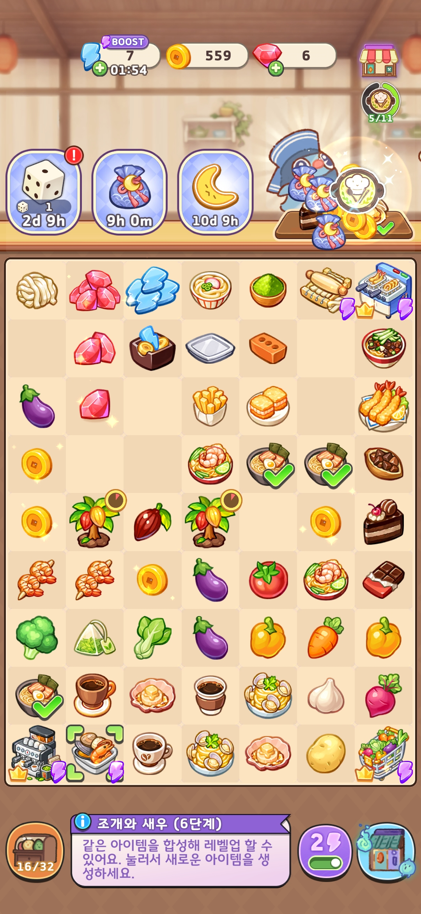
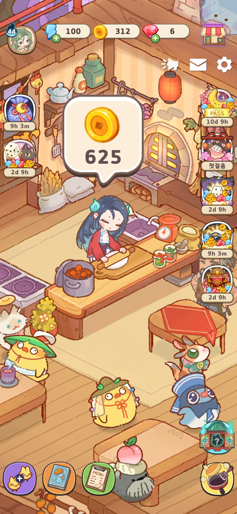

머지게임(가십하버) 레퍼런스 하나만 가지고 혼자 착수한 신규 프로젝트로, 실제 출시까지 이어져 현재 서비스 중입니다. 냥킹덤의 코드·유틸리티·폴더 구조를 기반으로 대부분의 구조를 재구성해 프로젝트의 뼈대를 직접 세웠고, 이후 합류한 팀원들이 기존 방식 그대로 작업을 이어갈 수 있도록 설계했습니다. 에셋 관리와 렌더링 기반부터 메인 로직, 아웃게임, 최적화, SDK·지표까지 주요 시스템 전반을 직접 구축했습니다.
Addressable Asset System, Universal Render Pipeline, Input System을 프로젝트에 도입했습니다.
Photoshop script, PSD Importer, 2D Tilemap 기능을 활용해 게임의 메인 로직인 보드판 생성 기반을 마련했습니다.
보드의 각 칸은 Tile Palette로 그려지는 Tilemap 격자 한 칸에 대응합니다. Tile Palette의 커스텀 브러시 기능을 활용해 눈으로 보면서 프리팹을 격자에 직접 찍어 보드를 만들 수 있는 환경을 구축했고, 동시에 Unity 기본 Move Tool 등도 그대로 유연하게 쓸 수 있도록 해 작업 환경의 제약을 최대한 없앴습니다.

아웃게임 요소인 식당을 개발하기 위해, 3D 공간에 2D 이미지를 올바른 정렬 순서를 유지하며 배치할 수 있는 2.5D 월드 레벨디자인 툴을 구현했습니다.
엔진이 Sorting Layer, Sorting Order, Sorting Group 등 다양한 기능을 제공하지만, 아트·기획 담당자의 작업 효율을 높이고 휴먼 에러를 줄이기 위해 보이는 대로 배치하면 보이는 순서대로 렌더링되도록 텍스처를 자르고 배치하는 툴을 제작했습니다.
Spine 애니메이션과 일반 이미지가 2.5D 월드에 함께 배치되면서도 자연스럽게 앞뒤 정렬되는 모습입니다. 실제로는 각 이미지가 위아래 방향으로 잘게 슬라이스되어 있지만, 철저히 계산된 배치 로직으로 조각 사이의 틈새가 유저에게는 보이지 않으면서도 개발 환경에서도 실제 게임 화면과 동일하게 보이도록 했습니다. 또한 Sorting Layer, Sorting Order, Sorting Group 등을 익힐 필요 없이 기본 Default Layer의 Sorting Order 0 그대로 작업할 수 있도록 해, 아트 작업자 친화적인 환경을 만들었습니다.

Unity Serialization 시스템에 대한 이해를 토대로, 플레이어 빌드에는 영향을 주지 않으면서 Editor에서는 각 필드 정보를 실시간으로 쉽게 확인할 수 있는 구조로 코드를 작성하고 시스템을 구현했습니다.
변경된 Unity 버전에 맞게 각종 SDK를 업그레이드하고 초기화 과정과 시점을 정리했습니다.